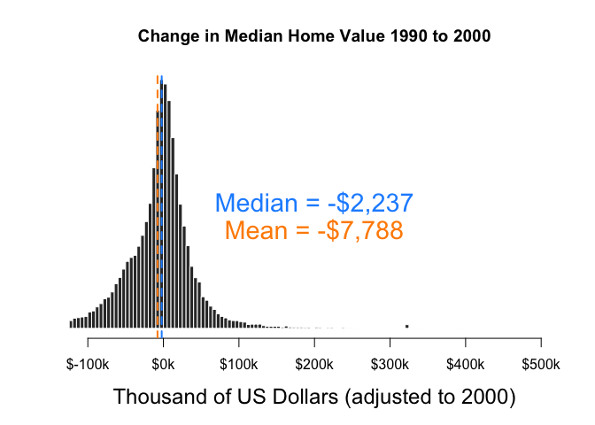
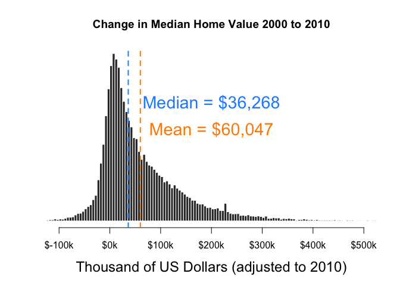
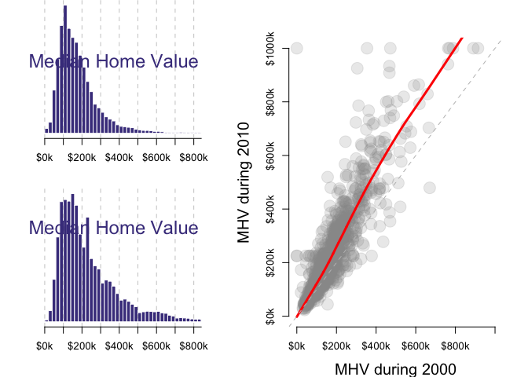
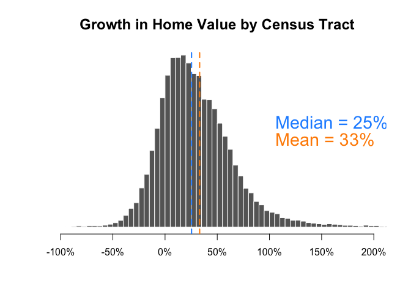
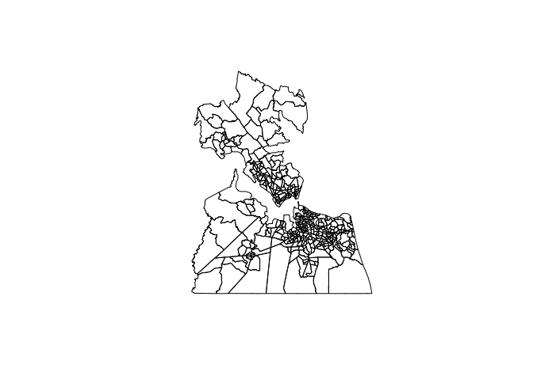
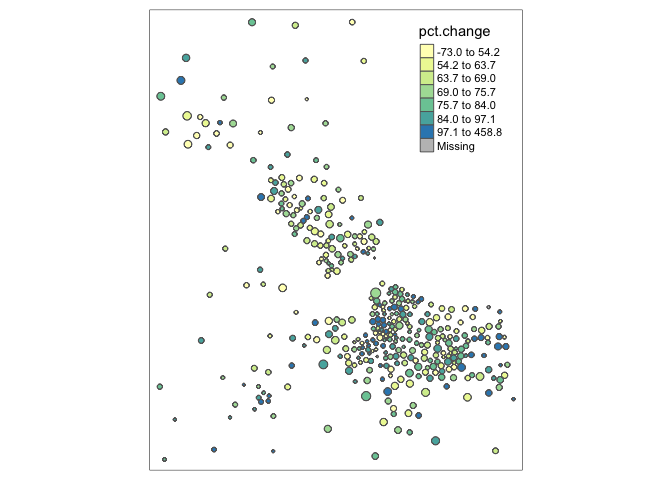

Descriptive Analysis and Prediction of Community Change
Introduction
There are three sections which focus on the exploration of median home
value (MHV), operationalizing gentrification, and spatial patterns.
While this chapter will garner insights on median home value, it will
not exercise the utility of additional variables. Understanding median
home value at this level can allow us to understand gentrification as we
build our approach for hedonic pricing models and measuring the impact
of federal programs as interventions in gentrifiable communities.
Summary Insights:
Through our analysis we find that the MHV data is skewed and by looking
at it using a relative change in MHV after removing potential empty
tracts, the quality of our insight improves. We see an average of 33%
increase in MHV from 2000 to 2010.
After defining a criteria for gentrification we found that ~6% of
tracts were gentrified. This is still open to interpretation because we
can consider that criteria for gentrfiability by new market tax credit
programs as capturing a much larger group of tracts, so an interesting
question might be which are being gentrified based on a more rigorous
criteria after participating in a program?
After taking a quick look at some spatial patterns, we can see that the
concentration of people could be related to the percent change in MHV,
this is also open to intepretation. Nonetheless, an important
consideration for future analysis.
Overall, this provides good insight into understanding changes in median
home value and it’s relationships to gentrification.
Note: This chapter imports multiple functions defined in the
utilitiesDescriptiveAnalysis.R file within the respective folder. Please
refer to this file for more detail. This chapter will contain plots and
tabular views with descriptions on the insight gathered.
First, we can explore the initial conditions in 1990 to 2000: There was
a decrease in MHV between 1990 and 2000 of $2,239.
# adjust 2000 home values for inflation
mhv.90 <- d$mhmval90 * 1.357
mhv.00 <- d$mhmval00
mhv.change90 <- mhv.00 - mhv.90
df <- data.frame( MedianHomeValue1990=mhv.90,
MedianHomeValue2000=mhv.00,
Change.90.to.00=mhv.change90 )
stargazer( df,
type = "html",
covariate.labels = c("MHV 1990", "MHV 2000", "MHV Change 1990 to 2000"),
digits = 0,
summary.stat = c("median","mean","min","p25","p75","max"))
|
|
|
Statistic
|
Median
|
Mean
|
Min
|
Pctl(25)
|
Pctl(75)
|
Max
|
|
|
|
MHV 1990
|
117,380
|
152,526
|
0
|
79,792
|
192,423
|
678,501
|
|
MHV 2000
|
119,900
|
144,738
|
0
|
81,600
|
173,894
|
1,000,001
|
|
MHV Change 1990 to 2000
|
\-2,237
|
\-7,788
|
\-678,501
|
\-27,975
|
16,239
|
1,000,001
|
|
|
Next, we can explore the initial conditions in 2000 to 2010: There was
an increase in MHV between 2000 and 2010 of $36,268. We should also
consider the median change of 36k, which is a lot less, but the mean
might be higher if we expected the data to be skewed. With minimum home
values of 0 and 9,999, we can expect empty land or other cases when home
value would be so low.
# adjust 2000 home values for inflation
mhv.00 <- d$mhmval00 * 1.28855
mhv.10 <- d$mhmval12
mhv.change <- mhv.10 - mhv.00
df <- data.frame( MedianHomeValue2000=mhv.00,
MedianHomeValue2010=mhv.10,
Change.00.to.10=mhv.change )
stargazer( df,
type = "html",
covariate.labels = c("MHV 2000", "MHV 2010", "MHV Change 2000 to 2010"),
digits = 0,
summary.stat = c("median","mean","min","p25","p75","max"))
|
|
|
Statistic
|
Median
|
Mean
|
Min
|
Pctl(25)
|
Pctl(75)
|
Max
|
|
|
|
MHV 2000
|
154,497
|
186,502
|
0
|
105,146
|
224,071
|
1,288,551
|
|
MHV 2010
|
193,200
|
246,570
|
9,999
|
123,200
|
312,000
|
1,000,001
|
|
MHV Change 2000 to 2010
|
36,268
|
60,047
|
\-1,228,651
|
7,187
|
94,881
|
1,000,001
|
|
|
Histogram of MHV
Creating histograms of the change in median home values from 1990-2000.
#1990-2000
histChangeMVH1(mhv.change90)

Creating histograms of the change in median home values from 2000-2010.
#2000-2010
histChangeMVH(mhv.change)

The distribution of change in MVH from 2000 to 2010 shows a positive
skew. Now that we know there isn’t a normal distribution of change, we
may want to look at change through a different lense.
Comparing 2000-2010 distributions of MHV.
#dist comparison between 2000-2010
distMVH(mhv.00, mhv.10, "2000", "2010")

The distributions for MHV in 2000 and 2010 are look similar with some
slight differences. In 2010, there is a spike around $240,000. Also,
there is a wider range of concentration in 2010 hovering $100,000.
The scatterplot is very interesting because it shows more of a
relationship between the years. From 2000 to 2010, the relationship
shows an increase in MHV, this supports what we’ve already seen - higher
home prices in 2010. As data points pass ~$500,000 the line starts to
decline. We might consider some data points above the red line and under
$10,000 in MHV during 2000 to be problematic since they may have change
in MHV that are not part comparable as a counterfactual.
Comparing change in home value by as a relative change in percent.
As we have progressed, two adjustments that can be noted that will allow
for better insight:
-
By using an absolute change in MHV we find skewed distributions and
some extreme changes in value. By computing change as a relative
measure, it may now make more sense for us to visualization the
group which contains various magnitudes in absolute value. Our
distributions are expected to change.
-
If there are additional data points that represent empty lots, or
others alike, then we will expect to see very high changes in value
relative to the MHV in 2000. By removing these we can find more
comparable data for thinking about the counterfactual.
#Remove values in 10k
mhv.00[ mhv.00 < 10000 ] <- NA
#create a percent change in MHV
pct.change <- mhv.change / mhv.00
#Plot 2000-2010
PlotPctChange(pct.change)

Showing changes by percent yields similar results, but still different.
The new insight is that there is a 33% change in MHV, or a 25% when
considering a skew. The range between median and mean is much smaller in
this case, remember we saw almost a 2x in the mean MHV from the median.
Removing problematic data may have made a difference in the output with
the help of using a relative change in MHV.
Using a relative change is important because we may expect there to be a
different absolute change in MHV for a home that is valued at $100,000
vs $300,000 in the year 2000.
Group Growth Rates By Metro Area
As we continue to use a percent change, we can start looking at cities
with the highest growth rate from 2000 to 2010.
#2000 to 2010 top 25 cities by growth
d$mhv.change <- mhv.change
d$pct.change <- pct.change
d$mhv.10 <- mhv.10
d$mhv.00 <- mhv.00
d %>%
group_by( cbsaname ) %>%
summarize( ave.change = median( mhv.change, na.rm=T ),
ave.change.d = dollar( round(ave.change,0) ),
growth = 100 * median( pct.change, na.rm=T ) ) %>%
ungroup() %>%
arrange( - growth ) %>%
select( - ave.change ) %>%
head( 25 ) %>%
pander()
| cbsaname |
ave.change.d |
growth |
| Ocean City, NJ |
$154,667 |
93.07 |
| Virginia Beach-Norfolk-Newport News, VA |
$97,955 |
71.81 |
| Casper, WY |
$70,770 |
70.03 |
| New York-Wayne-White Plains, NY-NJ |
$189,118 |
69.86 |
| Kingston, NY |
$89,272 |
65.08 |
| Barnstable Town, MA |
$146,088 |
65.07 |
| Washington-Arlington-Alexandria DC-VA |
$139,136 |
64.82 |
| Charlottesville, VA |
$104,487 |
62.74 |
| Atlan City, NJ |
$94,239 |
62.32 |
| Baltimore-Towson, MD |
$102,918 |
61.9 |
| Bethesda-Frederick-Gaithersburg, MD |
$146,639 |
61.46 |
| San Luis Obispo-Paso Robles, CA |
$172,722 |
61.01 |
| Midland, TX |
$54,576 |
60.3 |
| Los Angeles-Long Beach-Santa Ana, CA |
$145,968 |
60.3 |
| Redding, CA |
$87,677 |
59.12 |
| Honolulu, HI |
$194,665 |
58.85 |
| Chico, CA |
$81,746 |
57.83 |
| Nassau-Suffolk, NY |
$149,785 |
57.62 |
| Edison, NJ |
$125,056 |
57.19 |
| Santa Ana-Anaheim-Irvine, CA |
$177,367 |
56.05 |
| Poughkeepsie-Newburgh-Middletown, NY |
$101,010 |
55.18 |
| Flagstaff, AZ |
$71,072 |
54.67 |
| Salisbury, MD |
$60,400 |
54.06 |
| Winchester, VA-WV |
$73,165 |
53.76 |
| Odessa, TX |
$26,240 |
53.37 |
From 2000 to 2010, the highest growth rate by metro area is 93%. Ocean
City, NJ nearly doubled in value. If we refer back to the change by
tract, we can see changes > 200%. When measuring at the metro area, the
changes are more balanced.
There is a bit of a spread across the US, but the east coast seems to be
popular in this top 25 listing some of the top areas in New Jersey,
Virginia, New York, Mass., and Wyoming.
At this level, we may also be able to understand which cities are
experiencing gentrification as a whole. Although, we would still expect
certain tracts within a metro to not be experiencing gentrification.
This is where we can isolate tracts that may experience gentrification
based on their metro level measures.
Operationalizing Gentifrication
To operationalize gentrifcation we can pick certain criteria that would
elicit gentrification. Such an analysis would allow us to understand
gentrification at high level. E.g. the number of tracts that experienced
gentrification from 2000 to 2010.
Let’s focus on the following criteria:
- Lower than average home value in metro
- Above average diversity for the metro
- Change in MHV greater than city
- Change in MHV greater than median for country
- Loss of diversity
# home value in lower than average home in a metro in 2000
poor.2000 <- d3$metro.mhv.pct.00 < 50
# above average diversity for metro
diverse.2000 <- d3$metro.race.rank.00 > 50
# home values increased more than overall city gains
# change in percentile rank within the metro
mhv.pct.increase <- d3$metro.mhv.pct.change > 0
# faster than average growth
# 25% growth in value is median for the country
home.val.rise <- d3$pct.change > 25
# proportion of whites increases by more than 3 percent
# measured by increase in white
loss.diversity <- d3$race.change > 3
g.flag <- poor.2000 & diverse.2000 & mhv.pct.increase & home.val.rise & loss.diversity
num.candidates <- sum( poor.2000 & diverse.2000, na.rm=T )
num.gentrified <- sum( g.flag, na.rm=T )
num.gentrified
num.gentrified / num.candidates
With this criteria, we find that 1137 or 6.2% of tracts are likely to
have undergone gentrification.
Spatial Patterns
Virginia Beach-Norfolk-Newport News, VA came in #2 on our list, with
country and city level criteria we can see how the tracts themselves
might be changing in relation to the overall rank.
#plot the shape file to see outline
plot(msp.sp)

#plot dorling cartogram with size as population and color as pct change in MHV
tm_shape( msp_dorling ) +
tm_polygons( size="POP", col="pct.change", n=7, style="quantile", palette="Spectral" )

In this example, the tracts are concentrated on the bottom left, but
otherwise somewhat spread out across the region. Overall, there is not a
bad mix of high and low percent changes in MHV. Since the size of the
circle denotes population size, it is clear that some areas in the
bottom left contain larger populations than those further away. Those
with largest populations tend to have a turqiose color, indicating high
changes in MHV, but not the largest. The biggest changes (blue) tend to
be smaller circles. In future analysis, we may want to consider the
concentration of residents with the change in MHV.
References
*Census Geography: Bridging Data for Census Tracts Across Time*. n.d.
Spatial Structures in the Social Sciences, Brown University.
<https://s4.ad.brown.edu/Projects/Diversity/Researcher/Bridging.htm>.
*Low-Income Housing Tax Credit (Lihtc)*. n.d. Washington, DC: U.S.
Department of Housing; Urban Development.
<https://www.huduser.gov/portal/datasets/lihtc.html>.
*New Markets Tax Credit Program*. n.d. U.S. Department of the Treasury,
Community Development Financial Institutions Fund.
<https://www.cdfifund.gov/programs-training/programs/new-markets-tax-credit>.